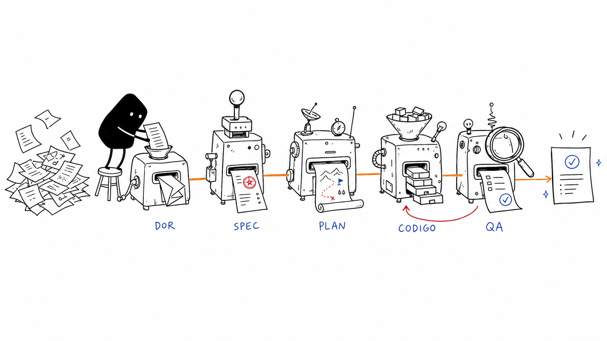
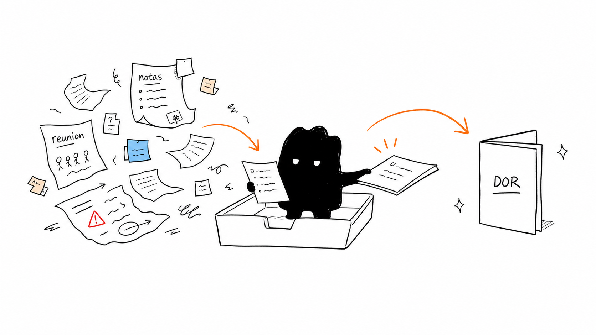
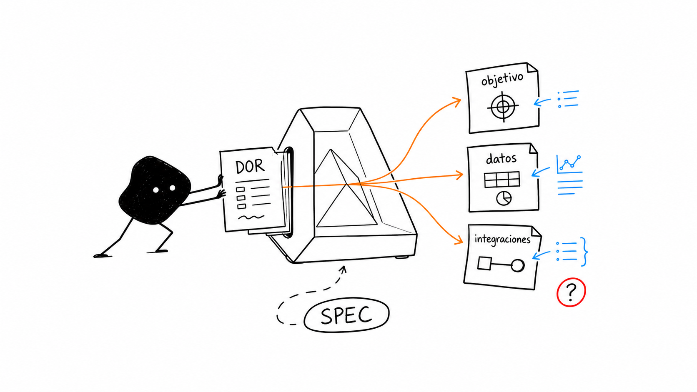
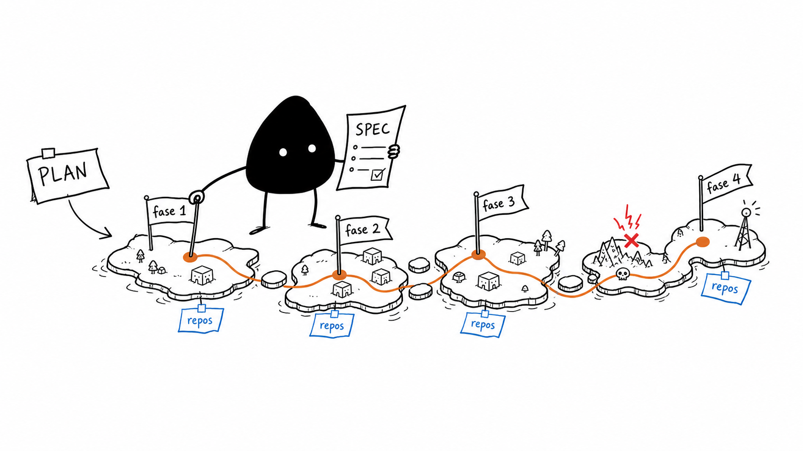
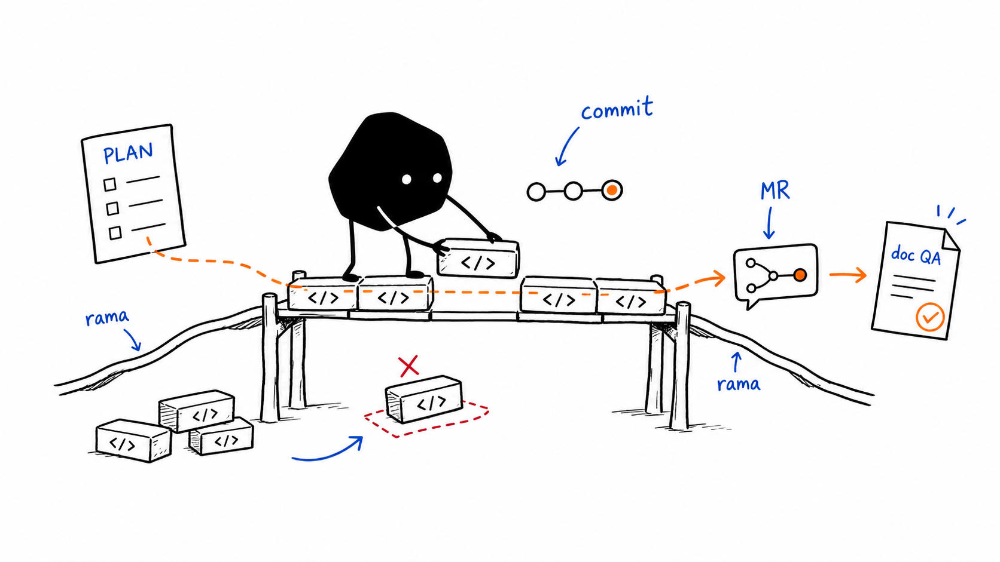
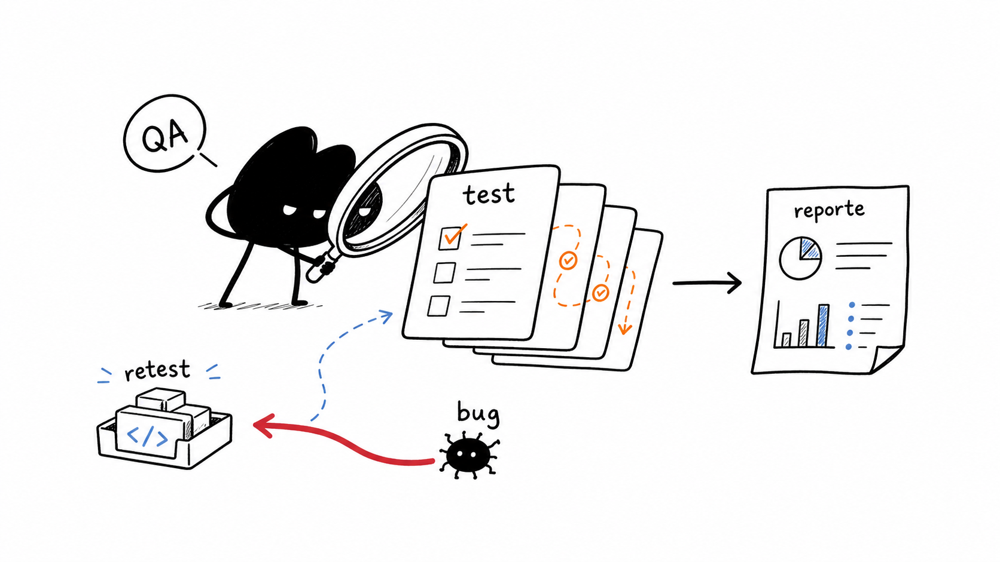

Flujo de trabajo guiado por agentes y skills de Claude Code para el ecosistema Sky Airline: desde un documento informal hasta el reporte de QA, pasando por la especificación técnica, el plan de implementación y el código en producción.

↺ ciclo de retroalimentación: si QA encuentra defectos, sky-qa-fixer los triagea y aplica los fixes sobre las ramas de IMPLEMENTACIÓN, y vuelve a QA para re-test.
Cada parada del recorrido existe para que nada se pierda entre la idea original y lo que termina corriendo en producción — y para que QA tenga siempre algo concreto que validar.
De un brief informal a un plan ejecutable sin reuniones intermedias: cada agente retoma exactamente donde el anterior dejó el documento.
Skills compartidas (commit, create-pr, clone-repo) aplican el mismo estándar en cada microservicio y microfrontend tocado, sin importar quién ejecute el plan.
DOR → spec → plan → commits → reporte de QA quedan encadenados por archivo y por ticket: siempre se puede responder "¿de dónde salió este cambio?".
fuente_conocimiento/ crece con cada feature: el siguiente plan ya
arranca sabiendo cómo está armado el sistema, no desde cero.
Cinco etapas, cinco agentes/skills, un mismo hilo conductor de archivos.

spec-generatorPunto de partida: cualquier insumo informal que describe lo que el negocio quiere — un brief de cliente, notas de reunión, un email de un stakeholder, un user story suelto. Todavía no es algo que un equipo de desarrollo pueda ejecutar directamente.
"Notas de la reunión con el cliente: quieren
agregar pago con tarjeta de crédito al checkout
de Mi Pasaje (mdp), con validación antifraude
y reintentos si el banco rechaza la operación."› Tengo este documento de requisitos del cliente
sobre pagos con tarjeta, necesito saber qué hay
que desarrollar.
specs/spec-pago-con-tarjeta-checkout-mdp.mdEl agente spec-generator lee el DOR completo, primero confirma el alcance con el usuario (qué es contexto ya construido vs. qué hay que desarrollar) y luego produce una especificación técnica estructurada: objetivo, requerimientos funcionales y no funcionales, entidades de datos, integraciones, cambios de UI/UX y preguntas abiertas.
› Usá el agente spec-generator para convertir
estas notas en una especificación técnica.specs/spec-pago-con-tarjeta-checkout-mdp.md
→ Objetivo, requerimientos func. / no func.
→ Entidades: Payment, Card, AntifraudResult
→ Integraciones: pasarela bancaria, microservicio
de órdenes, antifraude
→ Cambios UI: nuevo paso de checkout en mdp
→ Preguntas abiertas para el negocio
spec-pago-con-tarjeta-checkout-mdp.mdplans/plan-pago-con-tarjeta-checkout-mdp.mdEl agente spec-implementation-planner toma la spec, recorre la
carpeta fuente_conocimiento/ (apuntada por la variable de entorno
FUENTE_CONOCIMIENTO) para mapear qué microservicios y microfrontends están
directa e indirectamente impactados, arma un grafo de dependencias y el
camino crítico, y produce un plan detallado por fases/pasos: componente, tarea,
ruta física del archivo, manejo de errores, dependencias y complejidad.
› Generá el plan de implementación para
specs/spec-pago-con-tarjeta-checkout-mdp.mdplans/plan-pago-con-tarjeta-checkout-mdp.md
→ Prerequisitos (env vars, feature flags)
→ Fase 1: Backend — endpoint de pago + schema
Payment (microservicio orden)
→ Fase 2: Integración pasarela bancaria + retry
con backoff exponencial (microservicio pci)
→ Fase 3: UI checkout con nuevo paso de pago (mdp)
→ Mapa de componentes → repos
→ Riesgos: schema compartido Payment, migración
plan-pago-con-tarjeta-checkout-mdp.mddocs/impl-VC-4821.md para QALa skill plan-implementer ejecuta el plan paso a paso y en orden
topológico: extrae el ticket de Jira, propone y crea la rama, localiza o clona los repos
(sky-search-repos / sky-clone-repo), aplica los cambios de
código, commitea con formato convencional (sky-commit) y al cerrar produce
el Doc de implementación detallada que alimenta a QA. Las fases S0–S3.5 son de
solo lectura (parsean el plan y proponen el plan de ejecución); recién en S4, con
aprobación explícita, se escribe código y se commitea.
› plan-implementer plans/plan-pago-con-tarjeta-checkout-mdp.md --fase 1
→ Ticket detectado: VC-4821
→ Rama propuesta: feature/VC-4821-pago-tarjeta
→ Repos: ms-orden, ms-pci, mfe-mdp (clonados)
→ ¿Confirmás para pasar a S4 (escritura)? [y/N]→ Commits: [VC-4821] feat(orden): agregar
endpoint de pago con tarjeta
→ MR abierto vía sky-create-pr
→ Doc de implementación detallada → docs/impl-VC-4821.md
(para alimentar a sky-qa)
docs/impl-VC-4821.md con el detalle de lo implementadosummary.md con TCs, bugs y estadoEl agente sky-qa corre el pipeline completo de testing: genera el
test_plan.md a partir de la spec / doc de implementación, ejecuta los TCs
automatizables (frontend con agent-browser/playwright, backend con curl/bash, mocking
HTTP con peekr, verificación de datos con mongosh, logs con kubectl) y arma un reporte
consolidado con stats, blockers y bugs. Si aparecen defectos, sky-qa-fixer cierra
el loop QA → Implementador → QA aplicando los fixes sobre las ramas existentes.
› sky-qa docs/impl-VC-4821.md --env qa
→ plan .sky-qa/VC-4821/plan.md (TC-01..TC-12)
→ run iteracion-1_2026-06-08/resultados-tcs/
→ report .sky-qa/VC-4821/.../summary.md› qa-fixer sobre VC-4821, iteración 1
→ BUG-01: reintento no aplica backoff exponencial
→ Fix aplicado en ms-pci (rama existente VC-4821)
→ Doc de re-test generado para sky-qa
→ Vuelve a "run" → nueva iteración hasta cierreNo son cinco herramientas sueltas: son cinco paradas de un mismo recorrido, donde el archivo que produce una etapa es exactamente el insumo que necesita la siguiente.